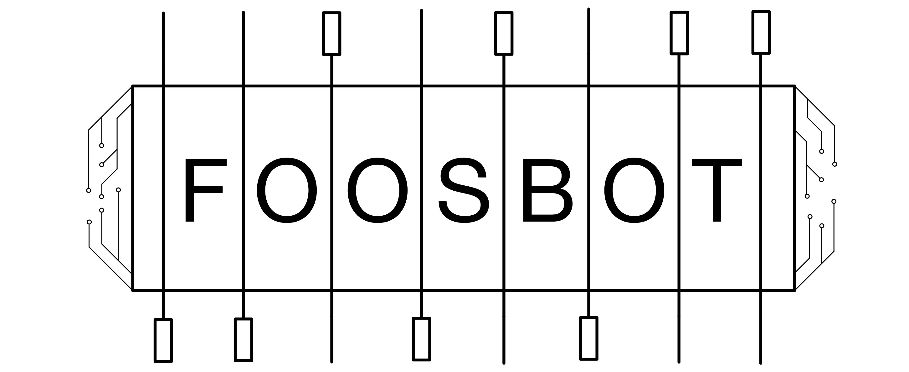

Business Intelligence Analyst at NSUS Group (GGPoker) UBC Integrated Engineering Graduate
About
Currently I'm working at GGPoker as a Business Intellgience Analyst.
A recently graduated Integrated Engineering student from UBC, I'm passionate about maximizing outcomes through data driven decision making. I hope
to leverage my analytical, problem-solving, and collaborative skills to deliver meaningful impacts
while satisfying my love for learning.
Between graduating and GGPoker I worked part-time at BC Children's Hospital supporting quality improvement
projects and particularly surgical site infection prevention practices. In this role I helped
increase SSI prevention rates hospital wide by raising awareness for prevention methods like skin cleaning, antibiotic timing, discharge education, and hypothermic event monitoring.
On a more personal level, I love sports. Particularly, hockey and soccer which I played competitively
throughout my youth. Beyond being my place of peace, sports has shaped my appreciation for teamwork, taught resilience,
and inspires my love for continuously trying to be the best version of myself. This passion has also bled into the world
of fantasy sports, a unique way for me to combine my analytical side and love for sports.
I also love staying connected to friends through on activities, music, and drinks/food!
Feel free to add me on Strava 🏃, Spotify 🎵, Beli or Untappd
"It takes a village to raise a child" is an African proverb and one of my favourite quotes. A big
believer in the value of team and surrounding myself with outstanding people, I strive to be that
excellent team member or friend that everyone is grateful to have.
Work Experience
Business Intelligence Analyst at NSUS Group (GGPoker)
In my BI role at GGPoker I support many teams across the company to make data-driven decisions.
As a result I've lead various projects across the company varying from writing queries to improve ETL in Snowflake from Tableau Prep, optimizing payments evaluation methods,
designing user-friendly insightful dashboards, supporting networks operations in identifying game trends, and developing new KPIs for monitoring the health of the business.
From May 2022 to April 2024 I worked under the supervision of Dr. Matthias Goerges for the digital health
innovation lab at BC Children's Hospital in both a full and part time capacity specializing in data
visualization development and analytics supporting quality improvement (QI) projects.
• Developed and deployed dashboards across different hospital groups driving increases in
surgical site infection prevention adherence rates
Skills: PowerBI ~ Python ~ Data Visualization ~ Data Analytics ~ MQuery
Business Systems Analyst Co-op at CIBC
I spent 8 months as a BSA (Business System Analyst) at CIBC where I
continually improved my understanding of project management, managing process transformation, and
driving process improvements. I’m pleased to say my hard work was also recognized as I was nominated
and received the CIBC Exceptional Co-op Student Award (~20 out of 500+ students).
Over the 2021 summer I interned at MDA (Macdonald Dettwiler and Associates) for the geointellgience
division where I was a Software Test Engineer. At MDA I spent my time developing automated web
applicaiton tests and API testing. Here I improved my abilities in end to end test automation using
the cucumber framework through Katalon Studio.
With the recent implementation of the 3-2-1-0 points system in the PWHL it is forgotten that during the 04-05 NHL lockout this was also a topic in discussion.
In my personal exploratory data analysis project I used python (pandas, numpy, matplotlib, seaborn) to clean, merge, and analyze
how things might have been different if the NHL had also implemented a 3-2-1-0 points system.
Linked here is my project currently on github including the data processing, analysis, and visualizations.
Skills: Python ~ Data Analysis ~ Data Visualization ~ Data Cleaning

My final capstone project was proposed by myself and completed alongisde 5 other outstanding
individuals. We developed an autonomous robotic foosball opponent which anyone could walk up and
play against. Below is a demo video of our project on the final presentation day.
Please see our drive for
more media and you can reference our poster for how it worked.
Skills: Python ~ OpenCV ~ Controls ~ Robotics ~ Optics ~ Simulation ~ GUIs
In my third year capstone project myself and a five others created overlap. Overlap is a Spotify
integrated web application that collects the users listening data creating fun visualizations for
the user to understand their own listening habits. The other key feature we built was the group
sharing capabilities to compare your listening habits to your friends. You can view the project
source code here and learn more about it in
this video Skills: Javascript ~ MongoDB ~ NodeJS ~ Python ~ POSTMAN ~
RESTful APIs
For my second year capstone project I alongside my team designed a solar powered path/street light.
Unfortunately, we were interrupted by the COVID-19 pandemic and shifted towards developing a full
scale CAD model. As team lead for Solit I was responible for CAD reviews and lead the system
simulation. The other notable contribution I made was programming components such as our data logger
and battery and solar management system.